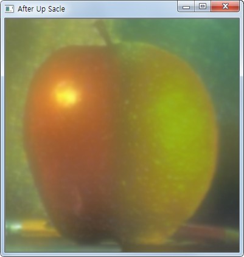

Image Pyramids¶
Goal¶
- Image Pyramid에 대해서 알 수 있다.
cv2.pyrUp()와cv2.pyrDown()에 대해서 알 수 있다.
Theory¶
일반적으로는 고정된 이미지 사이즈를 작업을 하지만, 때때로 동일한 이미지에 대해서 다양한 사이즈를 가지고 작업을 해야 하는 경우가 있습니다. 만일, 이미지에서 얼굴을 찾을 경우에 얼굴의 사이즈를 확신할 수 없습니다. 이럴 경우에는 원본 이미지에 대한 다양한 사이즈에서 얼굴을 찾는다면 좀더 정확하고 확실한 이미지를 찾을 수 있습니다. 이 처럼 동일 이미지의 서로 다른 사이즈의 set을 Image Pyramids라고 합니다(가장 아래에 가장 큰 해상도를 놓고 점점 줄여가면서 쌓아가는 형태입니다.)
Image Pyramid의 종류는 1) Gaussian Pyramids 와 2) Laplacian Pyramids 가 있습니다.
Gaussian Pyramid의 High Level(낮은 해상도. Pyramid의 상단)은 Lower level에서 row와 column을 연속적으로 제거하면서 생성됩니다. M x N 사이지의 이미지는 M/2 X N/2 가 적용되연 1/4사이즈로 줄어들게 됩니다.
Sample Code
1 2 3 4 5 6 7 8 9 10 11 12 13 14 15 16 | #-*-coding:utf-8 -*-
import cv2
img = cv2.imread('images/lena.jpg')
lower_reso = cv2.pyrDown(img) # 원본 이미지의 1/4 사이즈
higher_reso = cv2.pyrUp(img) #원본 이미지의 4배 사이즈
cv2.imshow('img', img)
cv2.imshow('lower', lower_reso)
cv2.imshow('higher', higher_reso)
cv2.waitKey(0)
cv2.destroyAllWindows()
|
Result
Laplacian Pyramid는 Gaussian Pyramid에서 만들어 집니다. cv2.pyrDown() 과 cv2.pyrUp() 함수를 사용하여 축소, 확장을 하면 원본과 동일한
이미지를 얻을 수 없습니다.(계산하면서 약간의 차이가 발생합니다.)
예를 들면 원본 이미지의 shape가 (225,400,3)을 cv2.pyrDown() 을 적용하면 행과 열이 2배씩 줄게 되고 소수점은 반올림이 되어 (113,200,3)이 됩니다.
이것을 다시 cv2.pyrUp() 을 시키면 (226,400,3) 이 되어 원본 이미지와 1row차이가 발생합니다. 이것을 resize를 통해서 동일한 shape로 만든 후에 2 배열을 차이를 구하면
아래와 같이 외곽선이 남게 됩니다.(짝수 해상도도 동일한 결과가 나옵니다.)
>>> import cv2
>>> img = cv2.imread('lena.jpg')
>>> img.shape
(225, 400, 3)
>>> GAD = cv2.pyrDown(img)
>>> GAD.shape
(113, 200, 3)
>>> GAU = cv2.pyrUp(GAD)
>>> GAU.shape
(226, 400, 3)
>>> temp = cv2.resize(GAU, (400, 255))
>>> res = cv2.subtract(img, temp)
>>> cv2.imshow(res)
>>> cv2.waitKey(0)
Result

이미지 Pyramid를 이용하면 이미지 결합을 자연스럽게 처리할 수 있습니다. 작업 순서는 아래와 같습니다.
- 2개의 이미지를 각각 Load함.
- 각 이미지에 대해서 적당한 Gaussian Pyramid를 생성함.
- Gaussian Pyramid를 이용하여 Laplacian Pyramid를 생성함.
- 각 단계의 Laplicain Pyramid를 이용하여 각 이미지의 좌측과 우측을 결함.
- 결함한 결과중 가장 작은 이미지를 확대하면서 동일 사이즈의 결합결과와 Add하여 외곽선을 선명하게 처리함.
위 작업단계 순서대로 2개의 이미지를 결함한 예제입니다.
#-*- coding:utf-8 -*-
import cv2
import numpy as np
from matplotlib import pyplot as plt
# 1단계
A = cv2.imread('images/apple.jpg')
B = cv2.imread('images/orange.jpg')
# 2단계
# A 이미지에 대한 Gaussian Pyramid를 생성
# 점점 작아지는 Pyramid
G = A.copy()
gpA = [G]
for i in xrange(6):
G = cv2.pyrDown(G)
gpA.append(G)
# B 이미지에 대한 Gaussian Pyramid 생성
# 점점 작아지는 Pyramid
G = B.copy()
gpB = [G]
for i in xrange(6):
G = cv2.pyrDown(G)
gpB.append(G)
# 3단계
# A 이미지에 대한 Laplacian Pyramid 생성
lpA = [gpA[5]] # n번째 추가된 Gaussian Image
for i in xrange(5,0,-1):
GE = cv2.pyrUp(gpA[i]) #n번째 추가된 Gaussian Image를 Up Scale함.
temp = cv2.resize(gpA[i-1], (GE.shape[:2][1], GE.shape[:2][0])) # 행렬의 크기를 동일하게 만듬.
L = cv2.subtract(temp,GE) # n-1번째 이미지에서 n번째 Up Sacle한 이미지 차이 -> Laplacian Pyramid
lpA.append(L)
# A 이미지와 동일하게 B 이미지도 Laplacian Pyramid 생성
lpB = [gpB[5]]
for i in xrange(5,0,-1):
GE = cv2.pyrUp(gpB[i])
temp = cv2.resize(gpB[i - 1], (GE.shape[:2][1], GE.shape[:2][0]))
L = cv2.subtract(temp, GE)
# L = cv2.subtract(gpB[i-1],GE)
lpB.append(L)
# 4단계
# Laplician Pyramid를 누적으로 좌측과 우측으로 재결함
LS = []
for la,lb in zip(lpA,lpB):
rows,cols,dpt = la.shape
ls = np.hstack((la[:,0:cols/2], lb[:,cols/2:]))
LS.append(ls)
# 5단계
ls_ = LS[0] # 좌측과 우측이 결합된 가장 작은 이미지
for i in xrange(1,6):
ls_ = cv2.pyrUp(ls_) # Up Sacle
temp = cv2.resize(LS[i],(ls_.shape[:2][1], ls_.shape[:2][0])) # 외곽선만 있는 이미지
ls_ = cv2.add(ls_, temp) # UP Sacle된 이미지에 외곽선을 추가하여 선명한 이미지로 생성
# 원본 이미지를 그대로 붙인 경우
real = np.hstack((A[:,:cols/2],B[:,cols/2:]))
cv2.imshow('real', real)
cv2.imshow('blending', ls_)
cv2.destroyAllWindows()
위 예제에서 5단계의 역할에 대해서 알아보기 위하여 마지막 i = 5 일경우의 각 이미지의 결과는 아래와 같습니다.

cv2.pyUp(ls_)수행 전의_ls이미지
cv2.pyUp(ls_)수행 후의_ls이미지
temp이미지. 잘 보이지 않지만 외곽선만 남아 있는 결과.
Up Sacle된 결과와 외곽선 이미지가 결함한 최종 결과
위와 같은 단계를 거쳐 부드럽게 2개의 이미지가 결합이 되었습니다. 단순하게 원본이미지를 결합한 결과는 아래와 같습니다.

단순 결합 결과